Dashboard Overview
The ABInBev dashboard provides a comprehensive view of all POC visits, sales, orders, and merchandiser activity. Access it at https://abinbev-dashboard.kaeyros.org/.
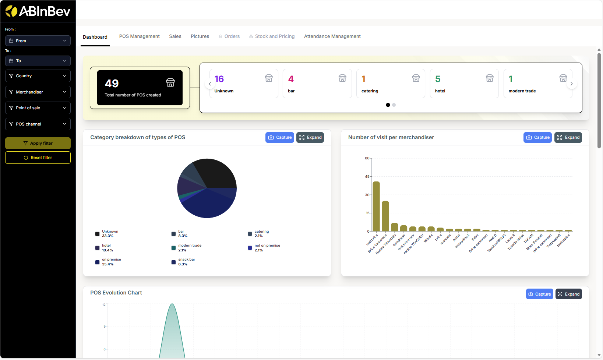
The dashboard is organised into several tabs: Dashboard (main overview), POS Management, Sales, Pictures, Orders, Stock and Pricing, and Attendance Management. At the top, you can apply filters to narrow down data.
Filters
You can filter data by:
From / To date range
Country
Merchandiser
Point of sale
POS channel (e.g., On Trade, Off Trade)
Agent : The Agent filter is only available in certain tabs, such as Sales and Attendance Management.
Click Apply filter to update the charts and tables. Reset filter clears all selections.
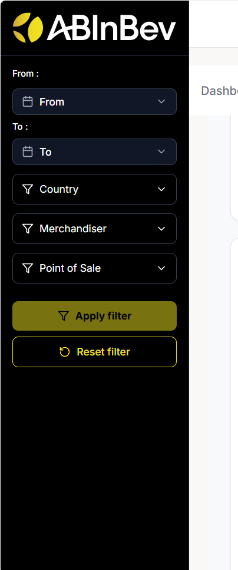
Dashboard Tab
The main dashboard displays key metrics:
Total number of POS created
Category breakdown of types of POS (pie chart: modern trade, restaurant, tavern)
Number of visits per merchandiser (bar chart)
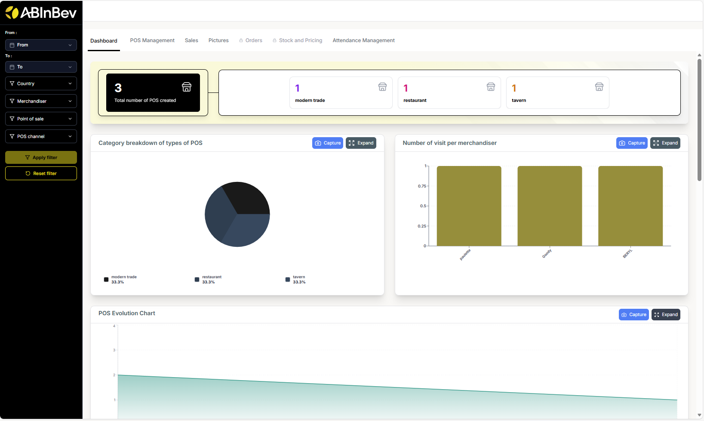
POS Evolution Chart (line chart showing POS creation over time)
POS Created per Merchandiser (a table listing each merchandiser and the number of POS they created)
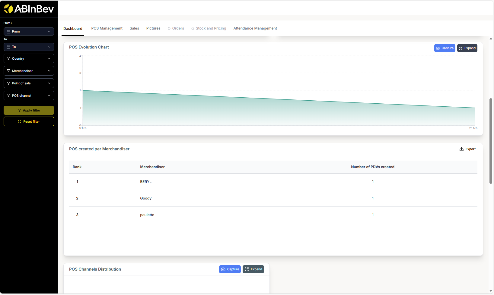
POS Channels Distribution (pie chart: On Trade vs Off Trade)
List of merchandisers & number of POS created (bar chart)
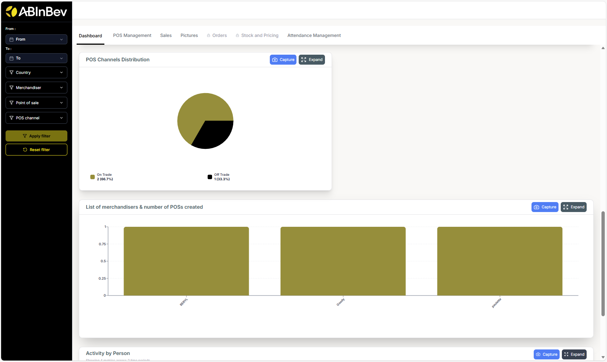
Activity by Person (line chart showing visits over days for each merchandiser)
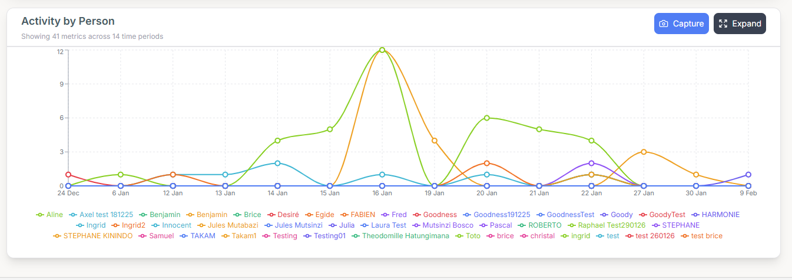
POC Management
This section allows you to manage and view all points of sale. You can switch between Table view and Map view.
Table view: Lists all POCs with columns: POS Name, POS Owner, POS Channel, POS Type, Location, Geolocation, Created on. You can search using the search bar.
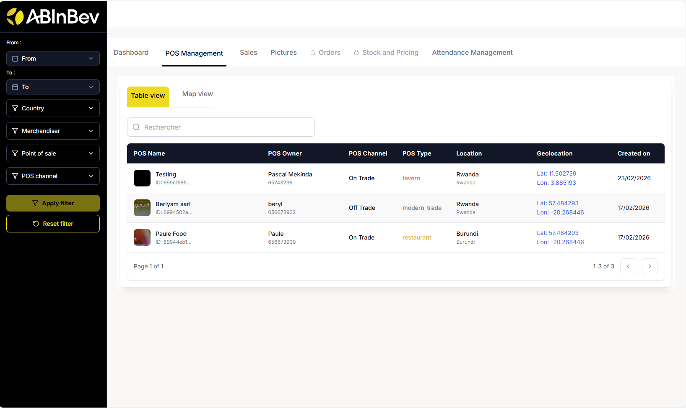
Map view: Displays POC locations on a map.
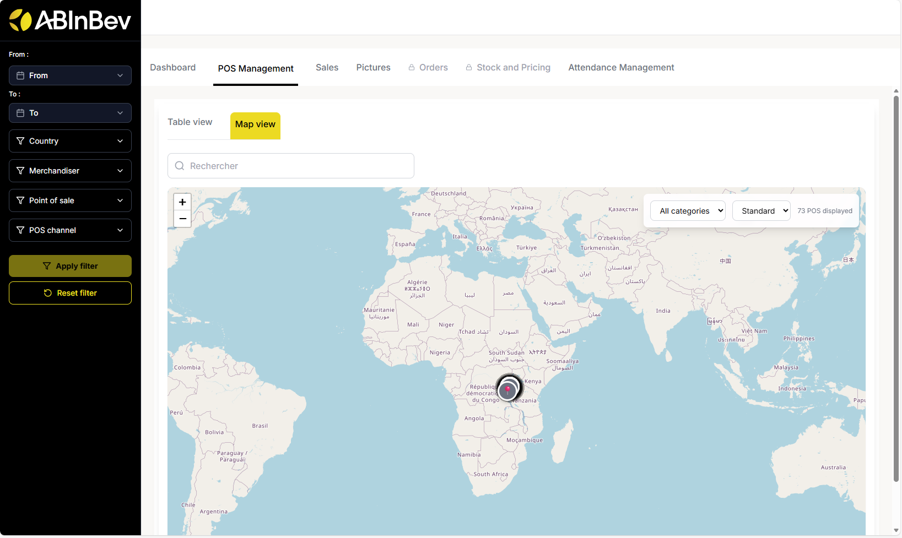
Sales
The Sales tab shows sales performance:
Total sales (sales amount from all visits)
Number of Orders (number of orders placed during visits)
Average Orders per Day (average number of orders placed per day across all POCs)
Total Quantities (sold during visits)
Sales per agent (bar chart: showing total sales amount for each agent)
Sales per product (bar chart: showing total sales amount for each product)
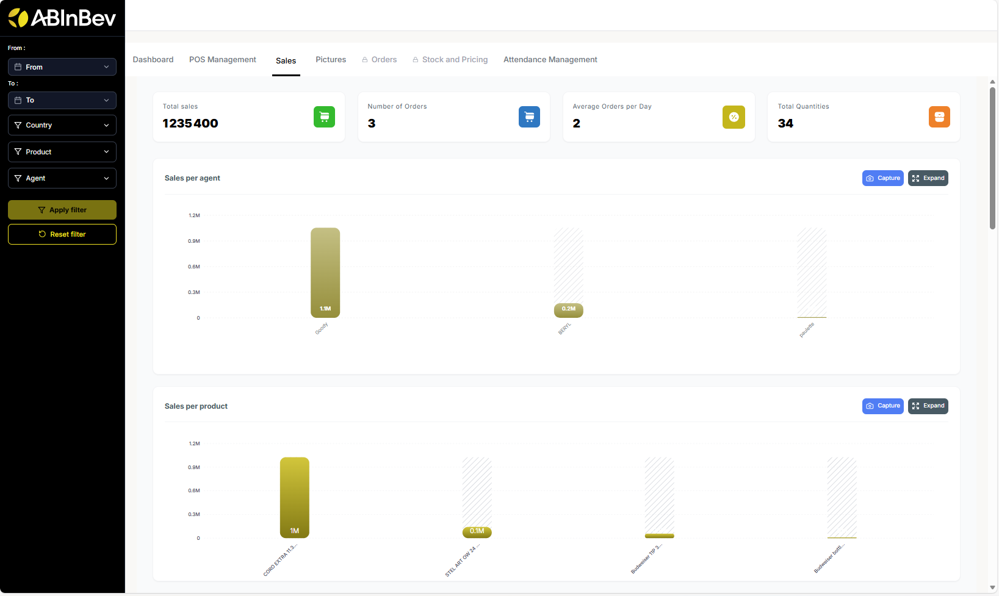
Number of Orders per Agent and per SKU
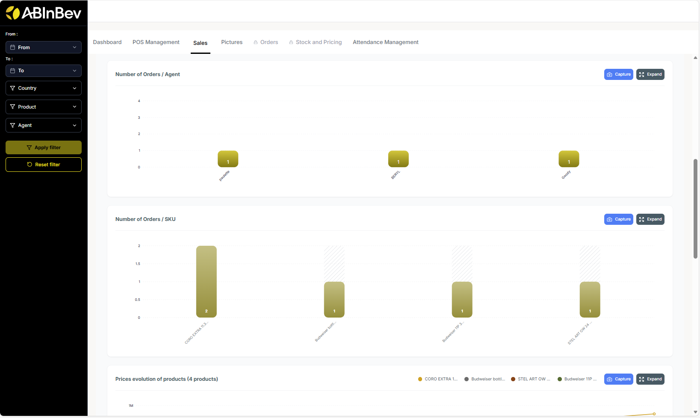
Prices evolution of products (line chart: showing price changes over time for different products)
Orders per Day (line chart showing number of orders over time)
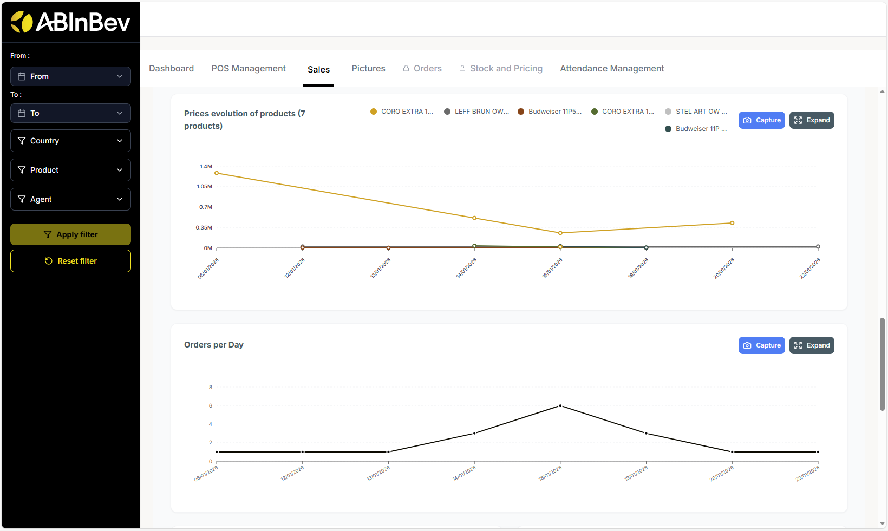
Quantities / Agent (number of units sold by each agent)
Quatities / SKU (number of units sold for each product)
Number of Rejections/Agent (number of rejections by each agent)
Number of Rejections / Reason (number of rejections by reason: e.g., out of stock, price too high, etc.)
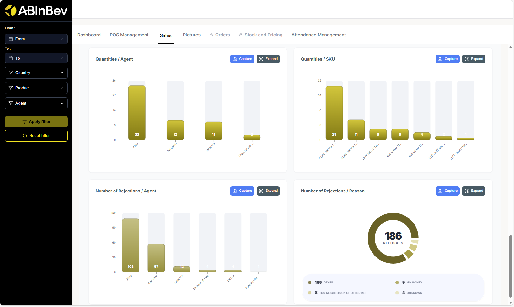
Pictures
This section may display photos taken during POC inscription (Shop Front, Beer Shelf). .. image:: ../_images/pic.png
Attendance Management
Monitor merchandiser attendance and work time:
Attendance summary: number of present/absent merchandisers.
Worktime category distribution (<1 hour, 1‑2 hours, etc.) and the number of occurrences of each category.
Daily attendance summary: chart showing attendance status of each merchandiser for each day.
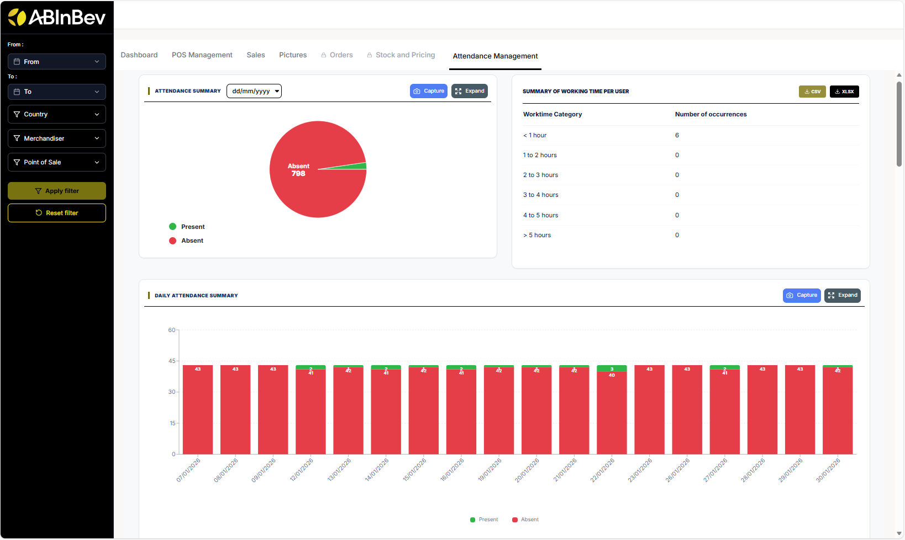
Attendance tracking per merchandisers : chart showing attendance status of each merchandiser over time category (early morning, late morning, afternoon).
Distribution of visits by time slots Chart showing distribution of visits by time slots (early morning, late morning, afternoon).
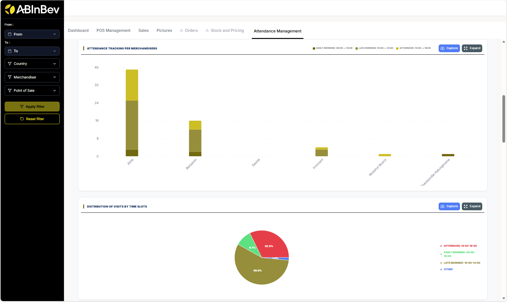
Distribution of visits per Day bar chart showing distribution of visits per day.
Average number of visits per week per agent : line chart showing average number of visits per week for each agent.
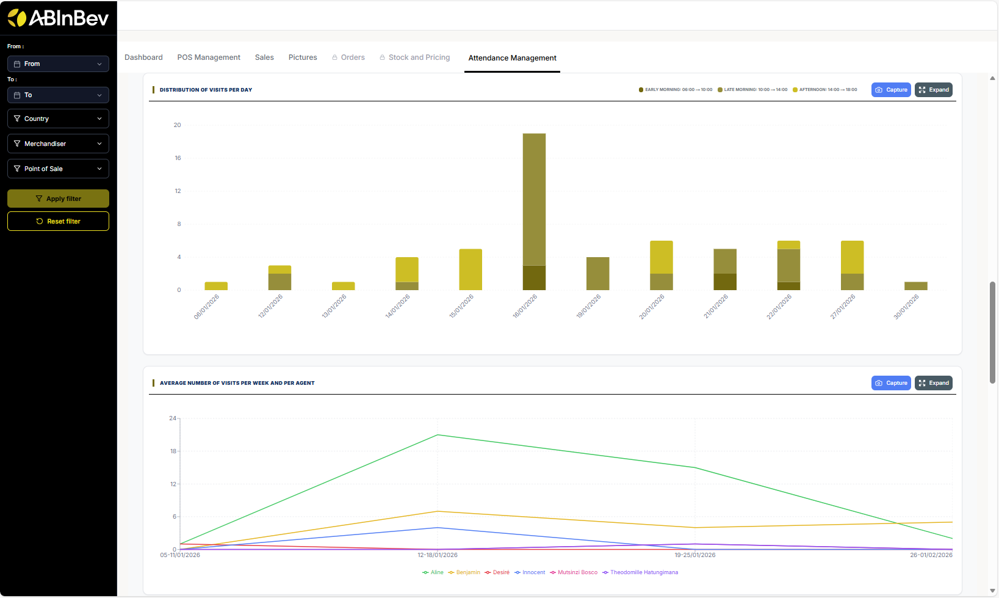
Distribution of visits per Month bar chart showing distribution of visits per month.
Table with a record of all visits with columns: Merchandiser, Country, Number of POS visited…
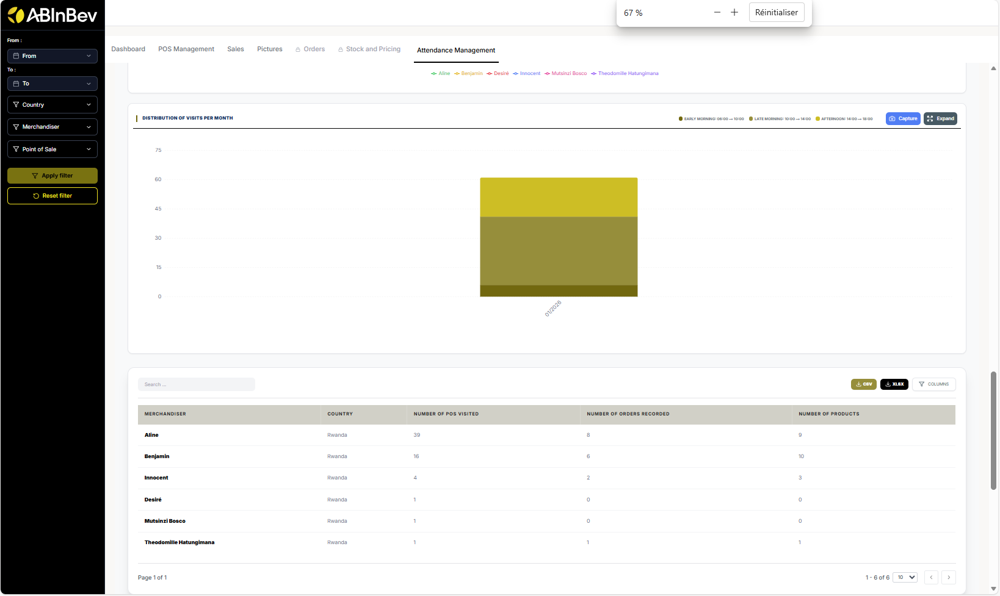
Working time report table with start/end times and total work time.
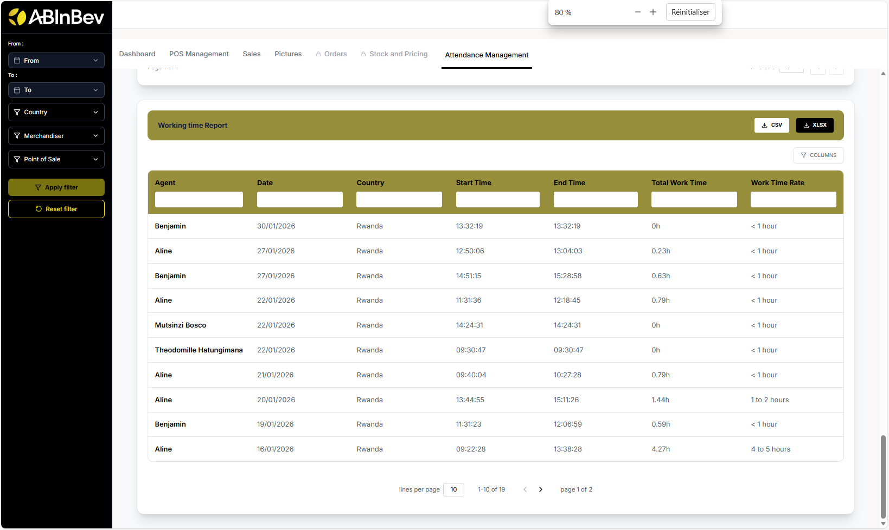
Export and Capture
Many sections have Capture and Expand buttons to take screenshots or enlarge charts for better viewing.